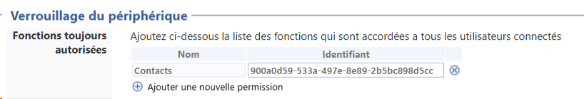
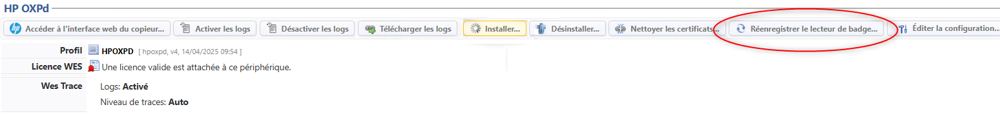
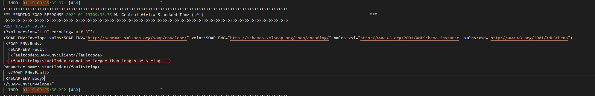
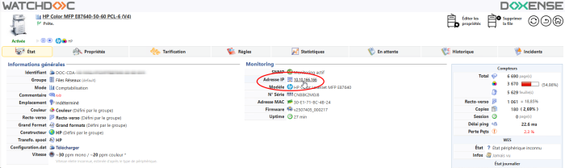
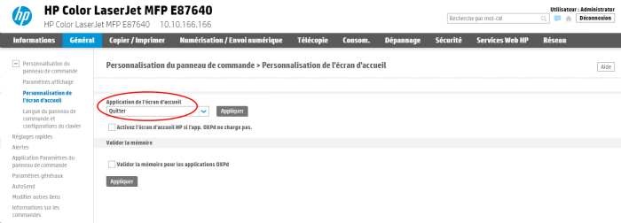
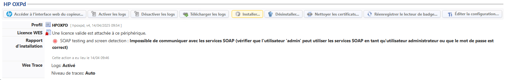
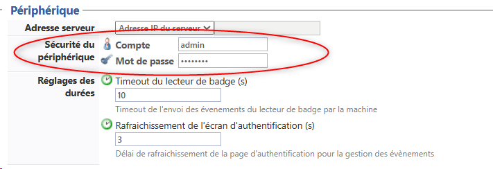
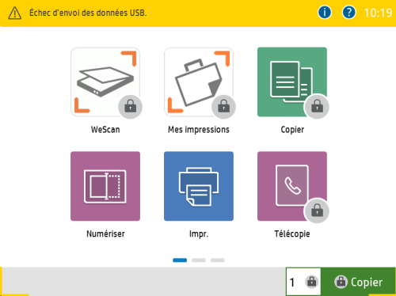
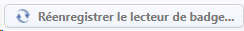

WES Hewlett Packard - Dépanner le WES
Règles générales pour le dépannage
Afin de permettre à l'équipe Support Doxense® d'établir un diagnostic de panne rapide et fiable, merci de communiquer le maximum d'informations possible lors de la déclaration de l'incident :
-
Quoi ? Quelle est la procédure à suivre pour reproduire l'incident ?
-
Quand ? A quelle date et à quelle heure a eu lieu l'incident ?
-
Où ? Sur quel périphérique et depuis quel poste de travail a eu lieu l'incident ?
-
Qui ? Avec quel compte utilisateur s'est produit l'incident ?
-
Fichier trace Watchdoc.log : merci de joindre le fichier de trace Watchdoc.
-
Fichier de traces WES : merci d'activer les fichiers de trace sur chaque file pour laquelle vous avez constaté un incident.
Une fois ces informations rassemblées, vous pouvez envoyer une demande de résolution depuis le portail Connect, outil de gestion des incidents dédié aux partenaires.
Pour obtenir un relevé optimal des données nécessaires au diagnostic, utilisez l'outil Watchdoc DiagTool fourni avec le programme d'installation de Watchdoc (cf. Créer un rapport de logs avec DiagTool).
Activer les traces du WES (WEStraces)
Pour effectuer un diagnostic du problème rencontré sur les applications embarquées, il convient d'activer les fichiers traces (logs) spécifiques aux communications du WES.
Pour activer les traces :
-
dans l'interface d'administration web de Watchdoc, depuis le Menu Principal, cliquez sur Files d'impression ;
-
dans la liste des files, cliquez sur la file dotée du WES pour lequel vous souhaitez activer les fichiers traces ;
-
dans l'interface de gestion de la file, cliquez sur le bouton Propriétés ;
-
dans la rubrique [Nom_du_WES], cliquez sur le bouton Editer la configuration :

-
dans la section WES > Diagnostic, cochez la case Activer les traces ;
-
dans la liste Niveau de traces, sélectionnez :
-
Auto : conserve les traces standard ;
- Inclure les contenus binaires : conserve les traces détaillées.
-
- dans le champ Chemin, indiquez le chemin du dossier dans lequel doivent être enregistrés les fichiers de trace. Si vous laissez le champ vide, les fichiers trace seront enregistrés par défaut dans le dossier d'installation Watchdoc_install_dir/Logs/Wes_Traces/QueueId :


Travaux de numérisation, fax et photocopie non comptabilisés
Si les travaux de numérisation, fax et photocopie ne sont pas comptabilisés par Watchdoc, vérifiez que l'adresse (nom d'hôte ou IP) du serveur Watchdoc configurée dans le périphérique est correcte :
-
dans l'interface de configuration de la file, dans la section WES, cliquez sur le bouton Etat de l'application (affiché lorsque le WES est correctement installé) ;
-
cliquez sur le bouton Télécharger afin de télécharger les fichiers de logs et de configuration du WES ;
-
si la configuration de l'adresse et/ou des ports n'est pas correcte, cliquez sur le bouton Configurer de l'interface de configuration de la file ;
-
vérifiez que la procédure a réglé le problème.
Problème d'affichage de l'icône d'accès au carnet de contacts dans le WES
Juin 2025
Contexte
Après installation du WES sur les périphériques d'impression Hewllett Packard (notamment HP E877), l'icône permettant d'accéder au carnet de contacts ne s'affiche plus sur l'écran du périphérique.
Résolution
L'anomalie peut être corrigée en mettant à jour Watchdoc en version 6.1.0.5276 qui comporte un correctif.
Dans le cas où cette mise à jour n'est pas possible, appliquez la procédure suivante pour résoudre le problème :
-
activez les WEStraces sur la file (cf. Activer les WES traces) ;
-
installez le WES (cf. Installer le WES sur la file d'impression) ;
-
sur leserveur hébergeant Watchdoc, accédez au fichier traces(log) du périphérique d'impression (stocké par défaut dans C:\Program Files\Doxense\Watchdoc\logs\Wes_Traces) ;
-
dans le fichier traces, cherchez les lignes contenant l'identifiant de l'application Contacts comme dans l'exemple suivant :
<Permission xmlns:xsi="http://www.w3.org/2001/XMLSchema-instance"xmlns:xsd="http://www.w3.org/2001/XMLSchema">
<id>900a0d59-533a-497e-8e89-2b5bc898d5cc</id>
<name>Contacts</name>
<localizedName>
<code xmlns="http://www.hp.com/schemas/imaging/OXPd/common/2010/04/14">fr-FR</code>
<value xmlns="http://www.hp.com/schemas/imaging/OXPd/common/2010/04/14">Contacts</value>
</localizedName>
</Permission>
-
copiez l'identifiant (figurant entre les balises <id> et </id>).
-
depuis le Menu principal de l'interface d'administration de Watchdoc, section Configuration, cliquez sur Web, WES & Destinations de numérisation :
-
sélectionnez le profil WES HP ;
-
rendez-vous dans la section Verrouillage du périphérique > Fonctions toujours autorisées ;
-
cliquez sur Ajouter une nouvelle permission et complétez les champs :
-
Nom : saisissez Contacts ;
-
Identifiant : collez l'identifiant copié précédemment dans les WES traces ;

-
-
cliquez sur Valider pour enregistrer les modifications apportées au profil WES ;
-
éteignez puis redémarrez le périphérique d'impression ;
-
dans Watchdoc, réinstallez le WES ;
-
authentifiez-vous pour vérifier que l'icône Contacts s'affiche de nouveau sur l'écran du périphérique.
Problème d'installation du lecteur de badge
Contexte
Lors de la configuration d'un WES Hewlett-Packard, si vous connectez le lecteur de badge avant d'avoir installé le WES, le périphérique délivre un message d'erreur informant qu' "aucune application n'est supportée par ce périphérique USB" ou "Echec d'envoi des données USB".
Cause(s)
Ce message survient lorsque le lecteur de badges est connecté alors que le WES Watchdoc n'est pas encore installé ou après une panne de Watchdoc ayant nécessité l'utilisation d'un autre serveur.
Résolution
Ce problème peut être évité en ne connectant le lecteur de badge qu'au moment de l'installation du WES (cf. 3e étape de la procédure de configuration d'un WES dans le Manuel d'installation - WES Hewlett-Packard).
Si le lecteur est installé a posteriori, il est possible de résoudre le problème en cliquant sur le bouton "Réenregistrer le lecteur de badges" lorsque le message d'erreur s'affiche :

Enrôlement (association) de badge impossible - "startIndex cannot be larger than length of string"
Contexte
Lors d'une installation du WES Hewlett-Packard avec une version Watchdoc inférieure à 5.4.1.3967, lorsque l'utilisateur passe son badge pour un auto-enrôlement, le voyant passe au vert, mais il ne se passe rien.
Dans les WES Traces, le message suivant s'affiche :
"startIndex cannot be larger than length of string"

Cause(s)
Problème dans le code, corrigé dans les versions Watchdoc supérieures à 5.4.1.3967.
Résolution
Pour résoudre ce problème, il convient de mettre à jour Watchdoc (v. 5.4.1.3967 min.).
Ecran d'accueil - Problème de mise à jour de l'écran d'accueil
Contexte
Après modification du mode de verrouillage de l'écran dans le profil WES (Complet - écran d'accueil / Complet écran de login), la modification n'est pas prise en compte sur l'écran du périphérique d'impression.
Cause(s)
Il est possible que l'ancienne configuration soit conservée en cache.
Résolution
Vérifiez tout d'abord que le paramètre Application de l'écran d'accueil est "Quitter" (par défaut) :
-
depuis les informations générales de la file d'impression, cliquez sur l'adresse IP du périphérique :

-
authentifiez-vous en tant qu'administrateur dans le périphérique d'impression :
-
dans le bandeau, cliquez sur l'onglet Général ;
-
dans le menu, Personnalisation du panneau de commande, cliquez sur Personnalisation de l'écran d'accueil :
-
pour le paramètre Application de l'écran d'accueil, vérifiez que la valeur sélectionnée est Quitter. Si ce n'était pas
le cas, sélectionnez cette valeur, puis cliquez sur Appliquer :

-
Arrêtez la file d'impression puis redémarrez-la.
-
Vérifiez sur l'écran du périphérique que la configuration définie dans le profil WES est bien prise en compte.
Services SOAP - Impossible de communiquer avec les services SOAP
Contexte
Lors de l'installation du WES, le message "Impossible de communiquer avec les services SOAP" s'affiche dans le rapport d'installation, empêchant l'installation du WES.

Cause
Cette erreur peut être due aux compte / mot de passe saisis dans le profil WES. Si ces informations sont inexactes, le WES n'arrive pas à communiquer avec le périphérique.
Résolution
-
Rendez-vous dans le profil WES appliqué sur la file d'impression > section Périphérique ;
-
Pour le paramètre Sécurité du profil,
-
Compte : vérifiez que le compte saisi dans ce champ correspond avec le compte d'accès au périphérique d'impression ;
-
Mot de passe : vérifiez que le mot de passe saisi dans ce champ correspond avec le mot de passe du périphérique d'impression.

-
-
Cliquez sur Valider pour enregistrer ce paramètre.
-
Réinstallez le WES sur la file : si le compte d'accès est conforme, l'installation se déroule avec succès.
Echec d'envoi des données USB
Contexte
Après un incident interrompant la connexion entre le périphérique d'impression et le serveur ou entre le périphérique et la base de données, alors que la connexion est rétablie, le message Echec d'envoi des données USB s'affiche sur les écrans des périphériques équipés d'un lecteur de badge :

Cause
Lors de la panne, la connexion entre le lecteur de badges et le serveur a été interrompue et n'est pas automatiquement réablie, même après réinstallation du WES.
Résolution
Pour résoudre ce problème :
-
accédez à Watchdoc en tant qu'administrateur ;
-
rendez-vous sur la file d'impression (ou le groupe de files) concernée par le problème ;
-
cliquez sur le bouton

-
retournez sur le périphérique d'impression pour vérifier que le message d'erreur ne s'affiche plus.